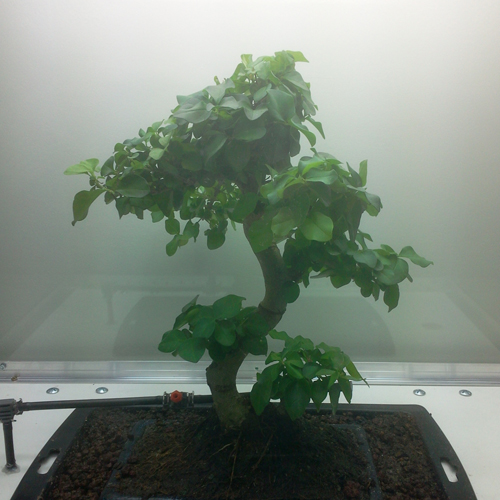

Vue de l'installation, Nicolas Bralet, 2012
Vue de l'installation, Nicolas Bralet, 2012
Cette installation présente un travail sur l'idée du phytotron, dispositif scientifique permettant l'expérimentation dans un environnement contrôlé. La plante y génère une composition sonore suivant son propre rythme biologique.
Matériaux:
Bois, acier, verre, plantes (Portulacaria alba) lampe à led de croissance, montage électronique, ordinateur, capteurs de montée de sève dit de Granier TDP, amplis, dispositif d'arrosage automatique, haut-parleur.
Dimensions : 2 m de haut, 40 x 80 cm
Détail de l'installation, Nicolas Bralet, 2012